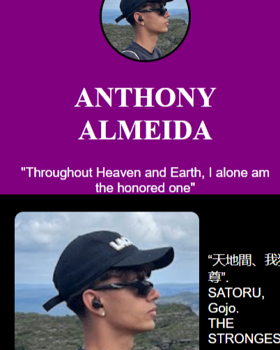
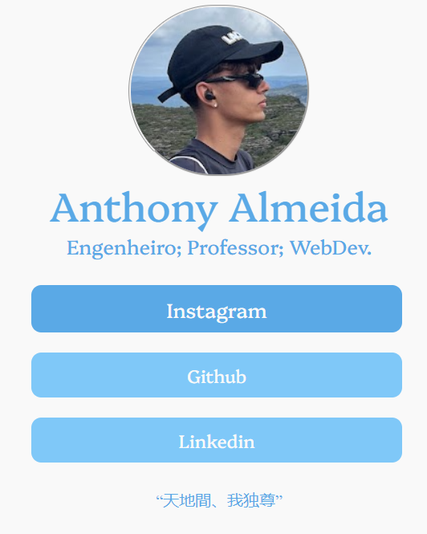
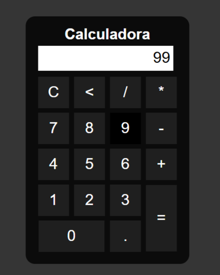

-
Projeto Inicial: Card de Perfil
Utilizando HTML e manipulando estilos com o CSS pela primeira vez, criei um perfil que consta foto, título e descrição.
-
Projeto: Linktree
Utilizando HTML e CSS, construí uma página pessoal que reúne todos os meus meios de contato de forma prática, popularmente conhecido como linktree.
-
Projeto: Portifólio Completo
Mesclando de tudo o que aprendi, criei um portifólio que reúne meus meios de contato, meu currículo e os projetos mais importantes que participei.
-
Projeto: Funções Matemáticas
Utilizando pela primeira vez o JavaScript, criei funções matemáticas simples em uma calculadora para manipular os dados.